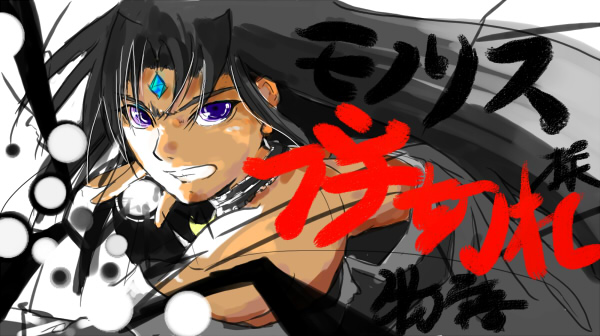
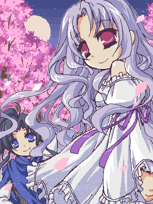
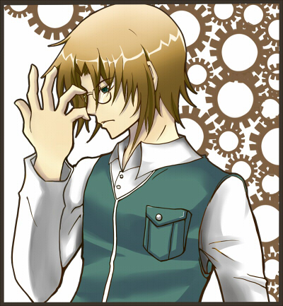
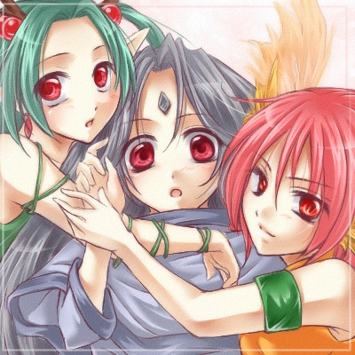
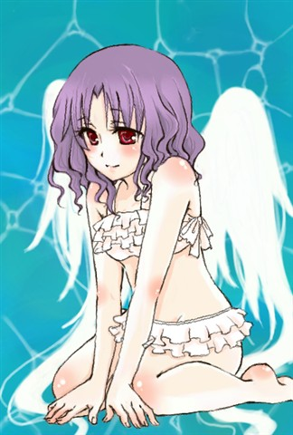
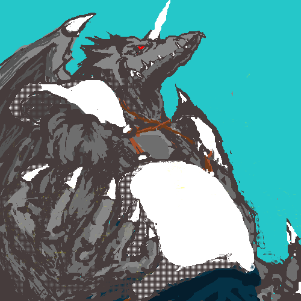
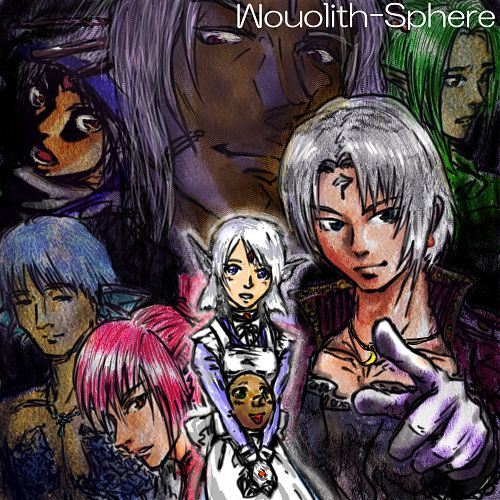

| －注意書き－ | |
| お絵かき掲示板にいただいた 名作イラストの数々をご紹介！ ここには2009年4月～2009年8月終わりまでに 描かれた物を掲載しています。 |
→のフレーム内の数字を選択していただければ その他の画像を閲覧できます。 これら素晴らしい絵を描いてくださった作者の皆様、 本当にありがとうございました！ ※PCの場合、F11キーで画面を広くする事でいくらか 見やすくなると思います、もう一度押すと元通り。 |
 モノリスフィアよりやる気マンマンなモノリス様。 動画『モノリス様ブチ切れ物語』に使用させていただきました。 |
|  春の夜桜とウリユ。この組み合わせは なんだかよく合う気がします。 |
 憂い顔のエシュター君、やたらかっこいいです。 |
|  モノリスフィア三人娘、これはかわいい！ |
 天使のような水着ウリユさん。 14歳ですが結構ぼんきゅっです。 |
|  魔王の威厳あふれる真なる魔王さん |
|  性別反転祭りよりモノリスフィアの面々。 パッとしないアクエリ男さんと、ムーン子＆ウッド子のかわいさに負けました。 その他の皆さんも普通にイケメンです、これはアツい。 |